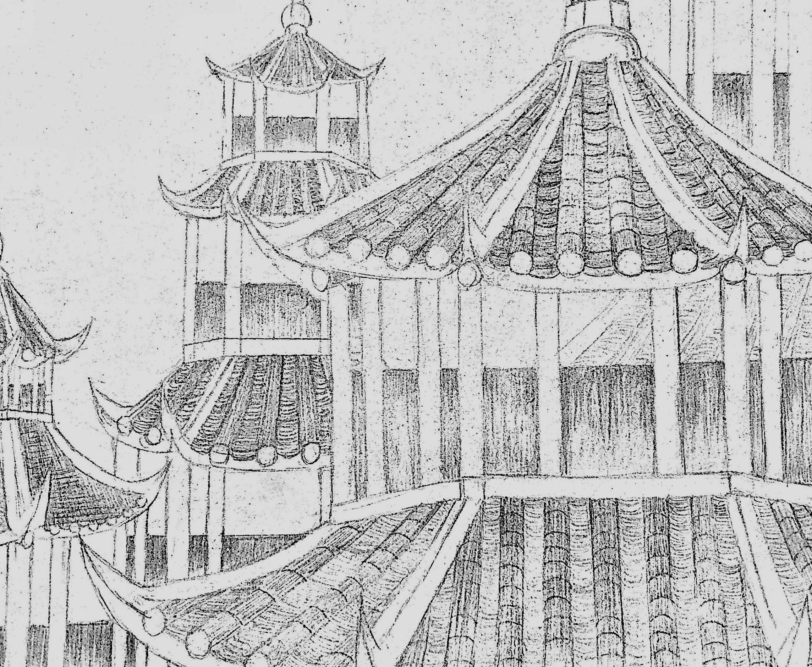

chapter one
The “One-dimensional space” is a world composed of words. Similarly, “Two-dimensional space” (ACGN) refers to the world in which two-dimensional characters exist, and the “Three-dimensional space” is the place where we live in now. Things from different dimensions can't see each other. However, from the perspective of us, the three-dimensional human being, the idea of breaking the boundaries between dimensions and seeing and feeling the world of another dimension has existed since long ago.
The specific time of the first emergence of ACGN cannot be tested. However, there has been only two or three hundred years, since the comics, and the animation and even the game which developed from comics became the window to see another world for people from three-dimensional space.
In our history, everyone has agreed that the world built by the comics, animations, or games that they see is called “Two-dimensional space”. I want to say that this is a big mistake. The part of the “Two-dimensional space” that can be seen by us is very small. When we look at the role activities in the “Two-dimensional space” through the screen, it is as if the god we admire leans over to see us as masses of ants.The two-dimensional characters that can be seen by us and the universe in which they exist in are the treasures that are in the upper dimension of the “Two-dimensional space”. Humans are born and then dead, while the soul can continue as a candlelight in the endless dark night. Only a very small number of our souls can be chosen by the higher "Spirit” to escape from reincarnation, which is a process of the extradition to the "upper", also known as “heaven” or “bliss”.
Let me think about it, how to explain to you, my friend. The world of different dimensions is stacked on top of each other, like a huge and beautiful glass pagoda. We are leaning down on the lower level. Through the glass, I can see the upper layer of the lower dimension; looking up, but above the fog, we can only rely on the state of our upper and higher dimensions.
Do you know some good cartoonists or game animators? They are all excellent "extraditers". You can understand their roles as the psychic media. They are good at discovering the excellent two-dimensional characters and the universe, and selecting them from the bottom of chaos and extradite them to the “upper world” which can be seen by us in “Three-dimensional space”. The media used by “extraditers” are unremarkable to us, perhaps just a regular magazine book, a screen or a screen of a mobile phone. But for the selected “Second-dimensional space” characters, this is the pure land of many of them who are eager to break into the bottom reincarnation.
But unlike the descriptions in our various religions, the “residence card” of “Pure Land” or “Heaven” is not permanent. Human beings are creatures that are forgetful and are fickle in affection. Moreover, in our three-dimensional world, time has passed invariably: books have become crumbs due to insects, and there are always updated "works" in the screen, and even the wonderful games will be unattracted one day. Even the magnificent second-dimensional universe system would silently collapse, and its glorious moment would call into end when no one remembered it. After the universe breaks down, the characters will once again break into the “bottom” and break into the endless.
chapter two
You may be wondering what I am talking about, but it doesn't matter. What is important is that this ruthless destiny is even more powerful and able to stand out from the competition. It is one of them.
I am fortunate to be a witness, and this historic feat must be fully recorded for future generations to pay.On X X, 2130 AD, an “extraditer” found me. It was a human being in three-dimensional world who just discovered that he extracted his spirit into the chip and introduced it into the two-dimensional world. I saw it in the two-dimensional world. It seems that the black sphere is flat. It comes from the x-cosm of the second element, trying to cause the suffering of reincarnation, always in the way of bliss.
"God, I am willing to give everything."
They know that they are not competitive in appearance, so they are trying harder and eager to seek a way to rise.
The result of negotiations and communication is that the “x plan”. Our bubble company will pay all the resources to experiment to transfer their defects into the three-dimensional entity, and establish a deeper connection with the “owner” of the three-dimensional world. If you can get enough attention and love (achieve the best achievements), such shackles will always be in the world of bliss, and vice versa, will return to the lower cycle.
You must know the story behind. Nine years later, our company's epoch-making product "perfect-one" for humanity was born...
Now, I will record and convey this to you. Thank you for your patience to see this. It is your luck and the luck of your perfect one. Just like our company's "more companionship, more care", to create memories that belong only to you and it. Achievement is mutual. I hope you can enjoy this process.More care,more companionship,and it becomes the "perfect-one" of each other.
 All conditioned phenomena
Are like a dream, an illusion, a bubble, a shadow,
Like dew or a flash of lightning;
Thus we shall perceive them.
All conditioned phenomena
Are like a dream, an illusion, a bubble, a shadow,
Like dew or a flash of lightning;
Thus we shall perceive them.